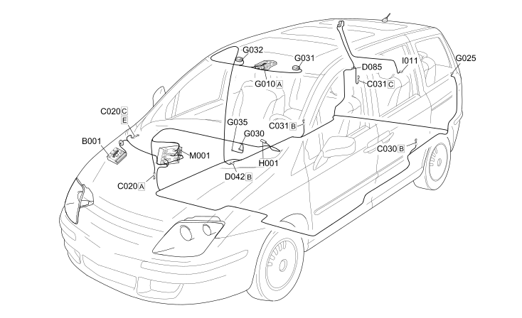

E2520 GLOVE COMPARTMENT LIGHT - BOOT LIGHT - SUN VISOR LIGHT COMPONENT LOCATION
- Path
- Electrical equipment > 1 ELECTRICAL FUNCTIONS > E25 INTERIOR LIGHTING > E2520 GLOVE COMPARTMENT LIGHT - LUGGAGE COMPARTMENT LIGHT - SUN VISOR LIGHT > E2520 GLOVE COMPARTMENT LIGHT - BOOT LIGHT - SUN VISOR LIGHT COMPONENT LOCATION
- Kind
- topic
- Applies to
- engines: 2.0 16V JTD, 2.2 16V JTD; all production periods; only with equipment: MY 2005
- Interactive page
- https://sloeber94.github.io/elrnDB-fUlss/en/#/179008796
Applies to: engines: 2.0 16V JTD, 2.2 16V JTD; all production periods; only with equipment: MY 2005

Component code | Description | Reference to the assembly |
|---|---|---|
ENGINE COMPARTMENT JUNCTION UNIT | ||
PASSENGER SIDE DASHBOARD EARTH | - | |
LEFT REAR EARTH | - | |
RIGHT REAR EARTH | - | |
COURTESY LIGHT COUPLING | - | |
REAR/TAILGATE COUPLING | - | |
FRONT COURTESY LIGHT | ||
LEFT REAR COURTESY LIGHT | - | |
GLOVE COMPARTMENT LIGHT | ||
DRIVER'S SUN VISOR LIGHT | ||
PASSENGER SUN VISOR LIGHT | ||
Ashtray light | - | |
Ignition switch | ||
BOOT RELEASE SWITCH | ||
BODY COMPUTER |
Topics linked from this page (21)
- 5505A MULTI-FUNCTION COMPONENTS
- 5520A IGNITION SWITCH
- 7015B TAILGATE LOCKING/OPENING DEVICES
- 7040E INTERIOR COURTESY LIGHT SYSTEM
- 7040G VEHICLE COMPARTMENT LIGHTENING SYSTEM
- 7065C ACCESSORIES AND DECORATIONS
- B001 ENGINE COMPARTMENT JUNCTION UNIT
- C020 PASSENGER SIDE DASHBOARD EARTH
- C030 LEFT REAR EARTH
- C031 RIGHT REAR EARTH
- D042 COURTESY LIGHT COUPLING
- D085 REAR/TAILGATE COUPLING
- G010 FRONT COURTESY LIGHT
- G025 LEFT REAR COURTESY LIGHT
- G030 GLOVE COMPARTMENT LIGHT
- G031 DRIVER'S SUN VISOR LIGHT
- G032 PASSENGER SUN VISOR LIGHT
- G035 Ashtray light
- H001 Ignition switch
- I011 BOOT RELEASE SWITCH
- M001 BODY COMPUTER